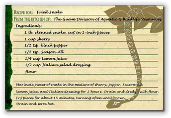
Writing a program is a lot like creating a recipe—kind of like this government recipe for Fried Snake from the Guam Division of Aquatic and Wildlife Resources.When you create a recipe you define two things:
- the ingredients you need: a skinned snake, a cup of sherry, black pepper, lemon juice and so on.
- the procedures for preparing and cooking those ingredients; marinate, drain, dredge, fry and drain.
Programs are similar. Instead of ingredients, you define
variables to hold the data that your program will use.
Instead of a list of chopping, dicing and baking instructions,
you define a set of procedures and functions
to process the data in those variables. These procedures
and functions will make up an algorithm that produces
the output you desire; perhaps a tasty piece of KFS!

Methods, Procedures and Functions
In object-oriented languages like Java, we usually use the term method to refer to both procedures and functions. I'm going to informally use the older, and more general terms though, to refer to specific kinds of methods:
- procedures to refer to methods that carry out an
action, like the
println()procedure in thePrintStreamclass, and - functions to refer to methods that return a value
to the caller, and that can be used to initialize variables
or as part of an expression, like the various functions
in the
Mathclass.
In the last few chapters you've learned
how to call procedures like print() or
drawString(). You also learned how to
define the main(), run()
and paint() methods (depending on the kind
of program you're writing).
Now, let's learn how to write your own procedures,
and not simply call or redefine pre-existing methods,
like println() or paint().
Most programs that you write will have programmer-defined methods. User-defined methods are designed to accomplish a single, simple task, and help to make your classes more flexible and easier to understand.
Why Methods?
Up until now, we've written programs where all of the
instructions are in a single method. As
your programs become larger, though, your code will become
much harder to understand, modify and debug.
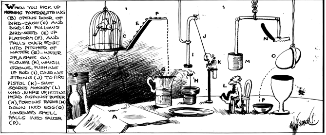
A better solution is to divide the work into different named sections of code or procedures. To carry our recipe metaphor a little further, instead of having a singlerun() method to cook your snake, you could divide
the program into marinate(), dredge(),
fry() and drain() methods.
Such simple, helper methods make the overall program easier to understand and easier to modify and are part of the concept of structured programming. Let's take a brief look at that before we go on.
Structured Programming
By the late 1960s, high-level languages were in full-flower, and there were a lot of them. Programmers had become monumentally more productive; at least, they were churning out a whole bunch of code. A decade earlier, a 20,000 line program was huge. Now programmers were thinking in terms of hundreds-of-thousands, and even millions of lines of code.
Despite the increased productivity, however, there was a small problem: the portions were huge but the quality left a bit to be desired. The Cold-War was going full-steam-ahead, and the government couldn't help but notice that when they ordered a new software system, the software:
- Cost a whole lot more than promised.
- Failed to arrive when promised
- Failed to work if it did arrive
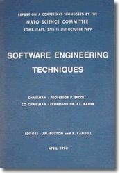
The government, and the military in particular, (what with $900 toilet seats and all), doesn't enjoy a reputation as an especially savvy consumer. (Undoubtedly this reputation is undeserved.) The crisis in software quality, however, made everyone sit up and take note, and, in the late 1960s, the NATO countries sponsored a pair of conferences which gave rise to the term Software Engineering. (Click here if you'd like to read the original reports from the 1968 Garmisch and 1969 Rome conferences. They're both quite interesting, as is Brian Randell's history of how the reports got written.)The questions the conference attendees asked were simple:
- Why does software cost more than is planned?
- Why doesn't software work the way is was designed?
- Why aren't software projects completed as planned?
In other words—to paraphrase Professor Henry Higgins' famous line from My Fair Lady:
In many ways, Software Engineering was kind of a bust: software is still late, bloated, and buggy. Despite that, some real good came out out the conference. A diverse group of people, around the world, now began to look at how to build good software. Before this, everyone was just kind of amazed that it could be done at all.
These efforts, and their results, are often called structured programming. Structured programming is important in its own right, but also because Object-Oriented Programming (OOP) builds upon the principles discovered by structured programming.
Procedural Decomposition
The first principle in structured programming is that little programs are easier to write, understand, and maintain, than are big programs. This principle is called "divide and conquer", or "procedural decomposition".
Structured Programming
encourages programmers to organize their programs as a
hierarchy of small sub-programs (often called
procedures or functions) that each
perform one small part of a task like this:
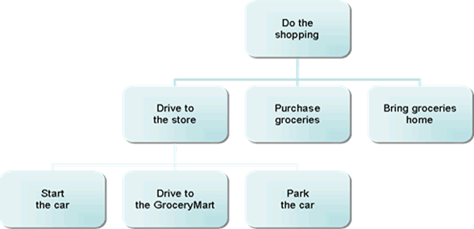
This looks almost like our snake recipe example, doesn't it?User-Defined Procedures
As I just mentioned, some methods perform an action, and some methods calculate or retrieve information. In many languages, the first type is known as a procedure and the second is known as a function. Java hasn't formally adopted these terms, but they are commonly used in the Computer Science world, so you should be familiar with them.
We'll start out learning to write "simple" procedures—methods that carry out an action, and that don't require any additional information to carry out their task. Then, we'll turn our attention to writing more complex methods: those that accept parameters, and those that return a value.
Drawing an Abacus
Here's an application named Abacus1 (which you can find inside
this chapter's code folder), that calls the
println() procedure inside the
main() method to display a simple ASCII-Art picture
of a Chinese Abacus.
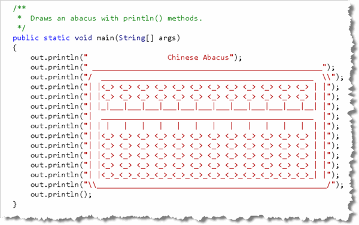
The Abacus program contains a definition for just
one method, main(). All of your
instructions are inside the main() method, using
the global System.out object to print your output.
You'll notice in this program instead of using System.out.println(),
I'm just using out.println(). I can do that because I
added a line to the top of my program: import static java.lang.System.*;.
This allows me to skip the System. in front of each
println() statement. Technically, that's because
out is a static object inside the
System class.
Top-Down Design
We'll start by splitting the program into individual user-defined methods. In DrJava, use File->Save As... to save a copy of the file Abacus1.java as Abacus2.java. Change the class name and then save again. Then, re-open the original Abacus1 file so both are open in your Files Pane. Your screen should look like this:
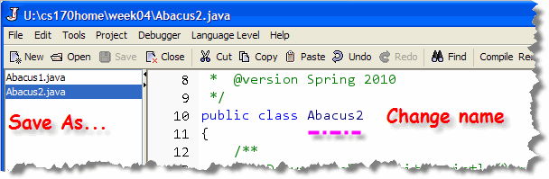
This way, if you "mess up", you can always re-open Abacus1.java and everything will be as normal. We'll also use Abacus1 to copy the original lines and paste them into Abacus2. Now, inside the main() method,
replace the individual println() statements with the
two commands printTopHalf() and printBottomHalf()
as shown here:
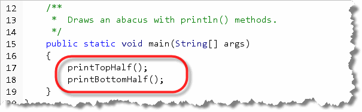
To call a simple procedure (or method or user-defined command) from within the class where it is defined, you just:
- use the name of the method
- followed by an empty set of parentheses
- followed by a semicolon
This is called top-down design. Rather than placing the individual
details inside the main() method, I listed the
individual steps that I want to carry out at the highest-level possible.
If I were writing a program called FriedSnake, then
my main() method may have looked like this:
gatherIngredients();
marinate();
dredge();
fry();
drain();
Note that these are not commands in the Java library, but commands that I've just made up to simplify the program that I'm trying to write. One way to think about this is to realize that a procedure is simply a user-defined command.
Defining the Methods
As you click the Compile button right now, you'll see that
DrJava isn't at all happy that you've called your own commands
or procedures inside the main()
method. That's because, even though you've called the methods,
you've yet to define them. Here's how you do that.
First, a method is defined inside the body of the class that contains it, never inside another method. To define a new procedure or command, you simply add a method definition that has these six parts. (You've seen these briefly in previous chapters).
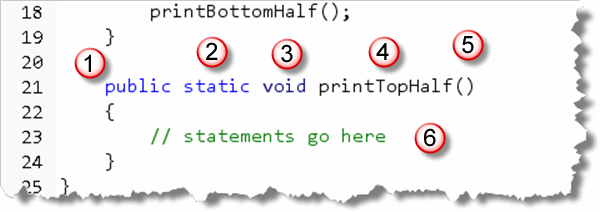
1. Access modifier
The access modifier determines who can call the method. Normally, you'll make your methods
public, although in this case, you could make the access specifierprivate, since it is only being used by themain()method in the same class.2.
staticmodifierThe
staticmodifier is necessary whenever you want to call a procedure or function from inside themain()method, (or from within otherstaticmethods). This is not actually very common. Once we've learned how to define classes, you'll very rarely use thestaticmodifier. If I had written the Abacus program as an ACM program or applet, we wouldn't need to usestaticeither.3. Return type
The return type is used for methods that produce a value, so that the method can be used in an expression. Procedures or simple methods don't return a value, they just carry out an action, so we use the "anti-type" named
voidfor this element.4. Name
The name of our first method is
printTopHalf()and the name of the second method isprintBottomHalf(). Method names must follow the rules for Java identifiers, just as attributes do. Here, we're also following the Java naming conventions, starting our method names with a lowercase letter and using uppercase letters to begin each embedded word.5. Parameter list
Because the simple procedures we're discussing don't take parameters, the parameter list is empty. You still have to include the parentheses, however.
6. Method body
The method body is enclosed in braces { }, following the parameter list. Since we don't pass any parameters to either method, we simply use the
println()to display the appropriate portion of the abacus.
The actual statements inside the printTopHalf() method would be
the same as those in the main() method, as shown here:
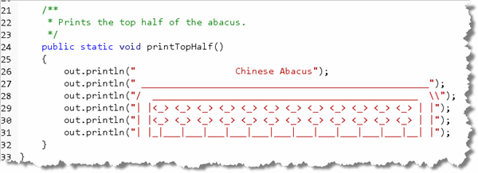
I've just copied the statements from Abacus1.java, (which is one reason I reopened it after creating Abacus2.)You cannot use procedures as part of an expression, like you can when calling a function.
Make sure you understand the difference between defining a procedure and calling, (or invoking), a procedure.
A procedure definition:
- Always has a return type before the name
- Never ends in a semicolon
- Is followed by a pair of braces
Calling a procedure:
- Never has a return type before the name
- Always ends in a semicolon
Procedural Decomposition Revisited
 "OK", I can hear you thinking, "exactly what was the
point of using procedures? The code certainly isn't
shorter or easier to understand? The version with everything
in the main() method was clearer!"
"OK", I can hear you thinking, "exactly what was the
point of using procedures? The code certainly isn't
shorter or easier to understand? The version with everything
in the main() method was clearer!"
And, I have to agree with you. The point of the preceding section wasn't to show you a great application of procedures, but to show you the syntax of procedure definitions and procedure calls in the simplest possible context.
Now we can look at one of the principle reasons for using procedures: eliminating redundancy. Procedures allow us to place commonly used actions or calculations in a named block of code and then to simply use that new name instead of repeating the same block of code over and over again.
Of course, you've been taking advantage of this in every
program you've written. The code for printing a simple integer
to the console, without using any procedures, is more than
one hundred lines of Java code. Imagine if you had to repeat
that same code, every time you wanted to print a value on
the console, instead of simply using the print()
procedure.
Another Look at the Abacus
So, let's take another look at the Abacus program. Go ahead and
use Save As once again to make a third copy of the original,
naming this one Abacus3.java. Don't forget to change the class
name. Here's what your screen
should look like:
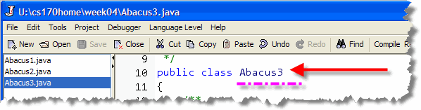
If you look in themain() method,
you'll notice that there are six lines of
output that are completely identical: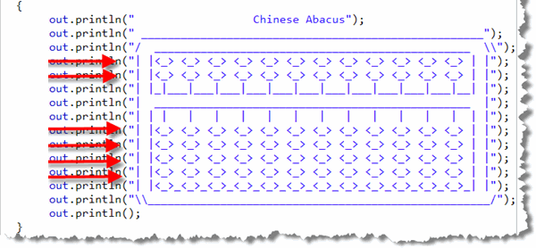
In Abacus3 we can extract those methods into a single
method definition named printBeads() that looks like this:
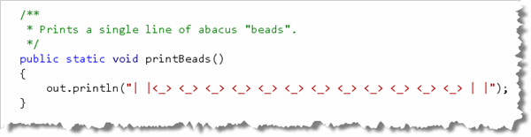
Then, in themain() method we can call the
printBeads() method instead of
repeating the same code over and over, like this: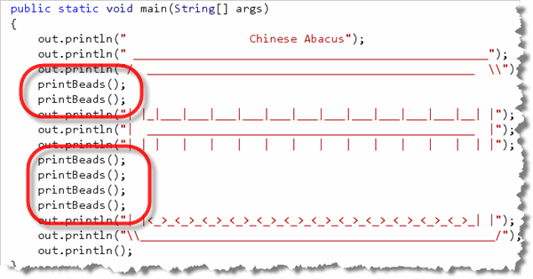
Stepwise Refinement
Of course, we still have redundancy, or repeated lines of code. The
main() method now contains six calls to
printBeads(). You'll find that's often true; you'll write
a method to eliminate redundancy and then find that you still have
more work to do. This is known as stepwise refinement and it's
part of a strategy of iterative development. As you
learn to program you should try to:
- Make simple changes, so you won't get confused.
- Test or evaluate your changes and see if there is more redundancy you can eliminate.
- Repeat the first two steps until there are no more improvements to be made.
Adding More Methods
If you look at Abacus3, you'll see that printBeads() is
called twice in the top portion, and four times in the bottom portion. Let's
put the principle of stepwise refinement to work, and eliminate the redundancy
in the top portion. We can do that by replacing the two adjacent
calls to printBeads() with a single call to a new method named
printTwoBeads() like this:
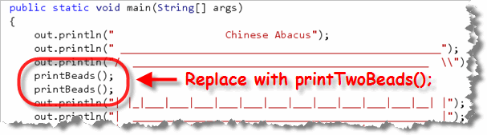
To define the printTwoBeads() method, instead of
writing two println() statements, we just call the existing
printBeads() method twice like this:
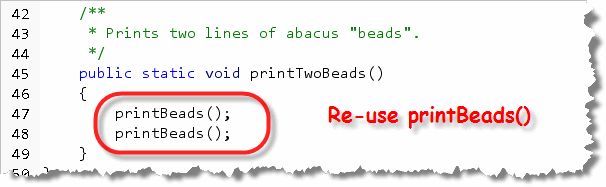
Notice that themain() method calls printTwoBeads()
and that printTwoBeads calls printBeads().
(And, of course, printBeads() calls the println()
method from the PrintStream class.)
printFourBeads()
We can do the same thing with the four adjacent calls to
printBeads() in the bottom half of the main() method,
replacing them with a single call to printFourBeads() like this:
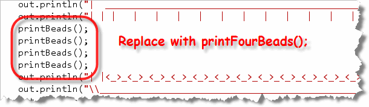
And similarly, we can defineprintFourBeads() by using
the printTwoBeads() method we just wrote, like this: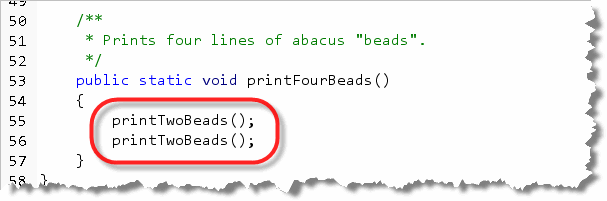
By reusing simple commands, we can create more complex commands. One way of looking
at this relationship is by using a hierarchy chart like that shown in
the Structured Programming section earlier. Here is a complete hierarchy
chart for the Abacus3 program (starting at the main() method):
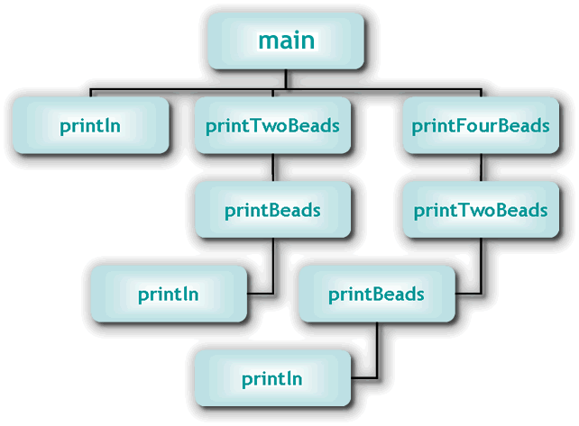
Finishing Up
Even though it doesn't eliminate redundancy, we can make the
program more modular by putting the top, middle and bottom
parts into their own procedures as well, so that the finished
main() method looks like this:
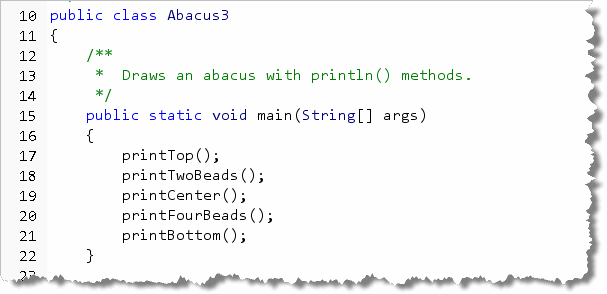

Procedures Summary
- The "generic" informal term for user-defined methods that carry out an action is a procedure, and the term for methods that calculate a value is function.
- Procedures are like the individual steps in a recipe; they work together to accomplish a larger purpose.
- Procedural decomposition means dividing a large program into smaller code. This technique makes the overall program easier to understand and easier to modify.
- Procedural decomposition is also known as divide and conquer, and is the first principle in structured programming. Structured programming is one technique developed starting in the late 1960s as part of the Software Engineering approach to building more reliable software.
- Top-down design is the technique of defining a program in terms of the most general purpose, highest-level steps initially, calling user-defined procedures that have yet to be defined.
- To define a procedure you specify the 1) access modifier,
2) optional
staticmodifier, 3) return type, 4) method name, 5) the parameter list and 6) the body enclosed in braces:
- To call a procedure, use it's name, supply any required values inside the parameter list, and end with a semicolon.
- A main reason to use procedures is to eliminate redundancy, or repeated code, in your programs.
- Stepwise refinement means making repeated small changes to your program. Such iterative development makes it easier to avoid getting confused.
- By reusing simple procedures, you can create more complex commands.
- A hierarchy chart shows the relationships between procedures.